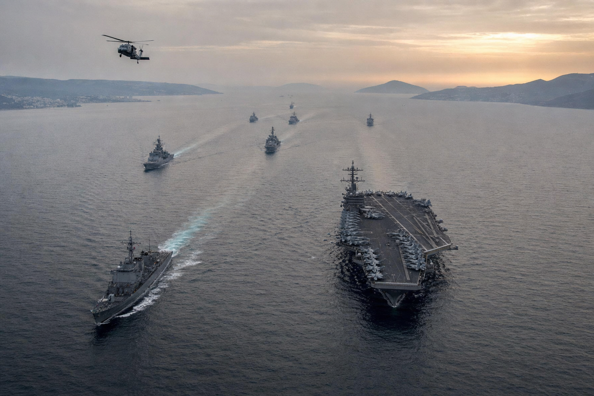

트럼프 "조기 종전 없다"… 이란 봉쇄 64일째

호르무즈 동측 입구 봉쇄선 — 미 해군 항공모함 전단이 호르무즈 해협 동측 입구를 봉쇄 중인 모습. 5월 1일 CENTCOM은 봉쇄 개시 이래 상선 약 44척을 회항·억류했다고 발표했다. (이미지: AI 생성 시뮬레이션)
트럼프 미 대통령은 5월 1일(현지시간) "이란과의 전쟁을 조기에 끝낼 생각이 없다"며 미 해군의 이란 항구 봉쇄를 유지하겠다고 못 박았다. 같은 날 백악관은 의회에 "2월 28일 시작된 적대행위는 종료(terminated)됐다"고 통보해 전쟁권한법(War Powers Resolution) 60일 시한 적용을 우회했다.
미 재무부 OFAC은 같은 날 이란 자금망 6명·21개 단체·선박 1척에 대한 신규 제재와 함께 "호르무즈 해협 통항료를 이란에 지불하면 제재 위험에 노출될 수 있다"는 글로벌 경보를 발령했다. 트럼프는 5월 2일에도 "이란이 받아들일 수 없는 요구를 한다"며 봉쇄 강도 유지를 재확인했다.
호르무즈에는 한국 선박 26척을 포함한 전 세계 약 2,000척의 상선이 통항을 못 하고 묶여 있다. 전쟁은 64일째에 접어들었다.
트럼프는 5월 1일 백악관 발 인터뷰에서 "조기 종전은 없다(no early end)"고 단언했다.
4월 29일 Axios 인터뷰에서는 봉쇄에 대해 "폭격보다 다소 더 효과적이다"라고 평가한 바 있다.
미 중부사령부(CENTCOM)는 4월 30일 발표 기준 봉쇄 개시 이래 상선 약 44척을 회항·억류 처리했다고 밝혔다.
백악관은 5월 1일 마이크 존슨 하원의장과 척 그래슬리 상원 임시의장 앞으로 서한을 보내 "2/28 적대행위가 종료됐다"고 통보했다.
이는 60일 시한이 5월 1일 도래한 전쟁권한법(WPR) 적용을 회피하려는 법적 포지션이다.
척 슈머 민주당 원내대표는 "헛소리(bullshit)"라며 반발했고, 브레난센터 캐서린 욘 에브라이트 카운슬은 "60일 시계가 정지될 수 있다는 어떤 문언도 없다"고 비판했다.
피트 헤그세스 미 국방장관은 4월 29~30일 양원 군사위 청문회에서 "휴전이 60일 시계를 정지시킨다(stops)"고 주장해 격론을 일으켰다.
OFAC은 5월 1일 신규 제재 패키지를 발표했다 — 개인 6명, 단체 21개, 선박 1척이 SDN(특별제재대상)에 등재됐다.
등재 인물은 이란·UAE·중국·도미니카·세인트키츠 국적이 섞인 이중·삼중국적자 다수로, 우회 자금망을 정조준했다.
OFAC은 같은 날 "호르무즈 통항 대가 지불의 제재 위험" 경보를 별도로 발령해 한국·일본·유럽 선사들의 결정을 직접 압박했다.
이란 페제시키안 대통령은 미국의 봉쇄를 "사실상 군사작전의 연장(extension of military operations)"으로 규정하며 협상을 거부했다.
이란은 4월 27일 파키스탄을 통해 "호르무즈 재개방·종전 ↔ 봉쇄 해제, 핵 협상은 후순위" 패키지를 제안했으나 트럼프는 4월 29일 거부했다.
이란은 5월 1일 이슬라마바드를 통해 갱신된 평화 제안을 다시 전달했다는 보도가 나왔다.
호르무즈 동·서편에는 한국 선박 26척을 포함해 약 2,000척이 발이 묶여 있고, 일일 통항은 평시 대비 95% 이상 감소했다.